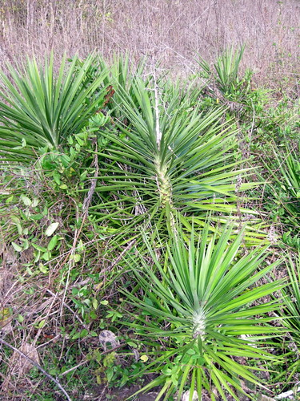
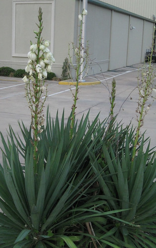
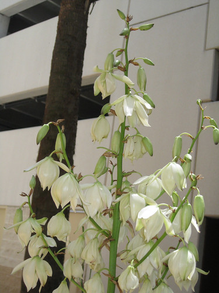
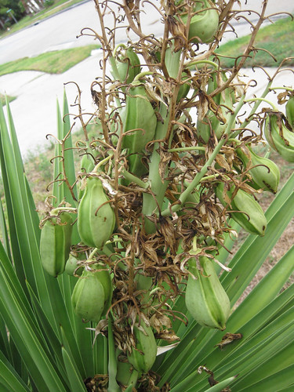
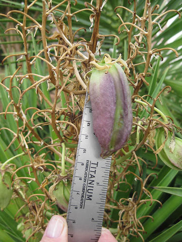
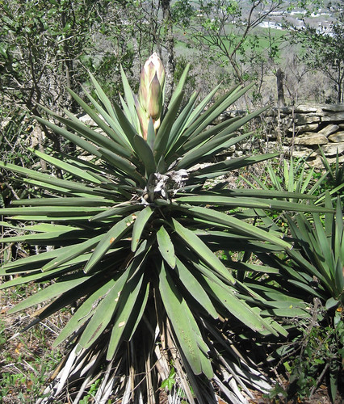
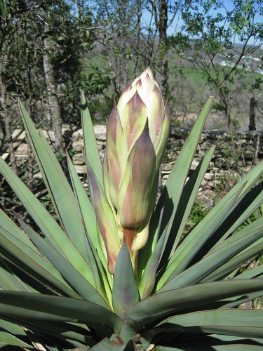
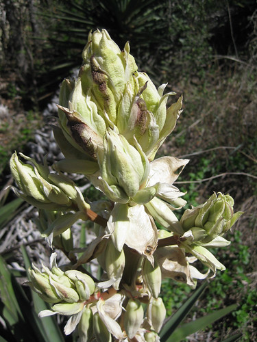

Yucca
Scientific name: Yucca spp.
Abundance: common
What: young flowers; flower stalks on both thick and thin-leaf yuccas before flowers appear; edible fruit of thick-leaf yucca (Yucca treculeana).
How: New flowers raw or cooked, flower stalks raw or cooked, fruit baked or roasted, stems raw or cooked
Where: Sunny areas
When: Flowers just after bloom, flower stalks before flowers appear, fruits when ripe, March through end of summer.
Nutritional Value: carbohydrates, minerals
Other uses:
Soap from stem and root, fibers/cordage from leaves, laxative properties, fish poison (saponins) from root.
Dangers: Only flowers, flower stalk, and fruit are edible, the rest of the plant is very poisonous.
Yuccu plant
Yucca flowers. They are best within the first few days or opening but after that they can turn nasty. Taste one before harvesting a lot.
Closeup of yucca flowers and flower pods.
Yucca fruit.
Yucca just before flowering.
Close-up of unopened flower stalk.
Close-up of flowers just beginning to open. The individual flower buds taste like cauliflower.
The flower stalk is sweet-tasting before it produces flower pods/flowers. Roast or pickle it before the pods appear. As the flower pods mature the stalk becomes tasteless and tough. After the flowers have past the ripe fruit of the thick-leaf yucca (Yucca treculeana) can be roasted and eaten like eggplant. Thick-leaf yucca is identified by the leaf base being four inches across where it attaches to the yucca's trunk.
The fibers of the yucca leaf are very strong and have been twisted into cordage for thousands of years. It is best to soak the leaves in water for a week or more to rot (aka retting) away the non-fibrous portion of the leaf which would otherwise weaken the cordage.
Yucca root contains a very high concentration of chemicals called "saponins" which are a natural soap. Native Americans used to put mashed yucca root in a woven bag, which was then dropped into a small pond or stream which had been dammed. The saponins enter into the bloodstream of the fish through their gills, stupefying them. They float to the surface where than can be easily caught. If quickly placed in clean, un-poisoned water the fish may revive and not suffer permanent damage.